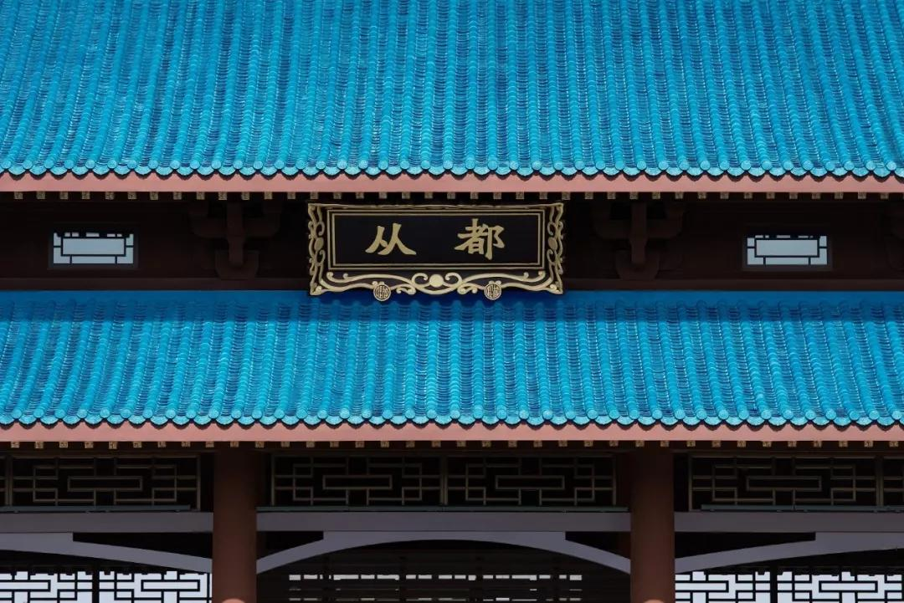

中国首家！斥资 80 亿的现代庄园，美国总统也爱上这里！

它曾是全球国家领导
备受青睐的度假胜地
它是中国首个庄园社交平台
由世界首席设计 WTAG 亲自操刀
被美国前总统克林顿誉为
广州的安纳伯格庄园
斥资 80 亿、占地 280 万㎡
在 2016 年正式对外开放！
▽
从都国际庄园
建议在 WiFi 条件下观看
01.
美国总统眼中的广州安纳伯格庄园
2016 年正式对外开放！
从都国际庄园坐落在温泉之乡 -- 广州从化的凤凰山脚下，从市区驱车 1 小时就能抵达。2012 年它吸引了全球政治领袖、各界精英以及国际高端旅客纷至沓来，连美国前总统克林顿也爱上了这里，并誉它为「广州的安纳伯格庄园」。
数十年以来，从化这块宝地一直是中国国家领导人的疗养胜地。而在 2016 年，这个斥资 80 亿占地 280 万㎡的中国首个社交庄园平台、一直只接待国家政要的度假胜地，终于正式对外开放，不得不让所有旅客对它充满无限期待！
从都庄园集度假、温泉、国际会议等多种形态于一体，让你感受由全球首席设计公司 WATG 精心设计打造的传承皇家造园理念，体验世界独一无二的珍稀氡泉... 所有世界级的顶尖享受，如今就在家门口，你也能来打卡了～
02.
隐与凤凰山下的汉唐建筑
全球首席设计 WATG 亲自操刀
凤凰山下，一大片蓝色的瓦片屋顶，和谐地掩映在自然丛林之中，静谧盎然，这是我第一印象中的从都。
大气磅薄的盛唐帝王式建筑由全球首席设计公司 WATG 亲手操刀，它完美的结合了传统中国风，将气派的唐朝建筑与大自然的青山绿水完美融入，毫无疑问，从都国际庄园就是广东的最佳打开方式。
踏入庄园正门，小麦就已经被恢弘的气派震慑住了，庄园占地面积足足 280 万㎡，美如画卷，一点也不落俗套。
在从都最高处的城楼，打造了一个 9964㎡ -- 凤凰官邸，专为当今风云领袖人物设计。如今入住从都，彷佛就像是一场穿梭回汉唐的奇妙之旅。
03.
280 万㎡仅藏 37 酒店
最大限度将诗意山水画卷呈现
从都是中国国内首个全套房式庄园。整个度假村森林覆盖率近 7 成，拥有 90 间套房、37 栋院落式酒店，和占地 9968㎡的总统凤凰官邸。房间体量虽小但极致奢华，每一个院落酒店都是一个精致的庄园。
庄园的房间面积更是让人大爱，最大的面积 732㎡，最小也有 109㎡起跳，哪怕是一家三口，在这里也完全足够装下一段优哉游哉的假期时光。
推门入内还未好好审视房间，便被庄园精心挑选的香薰打开了嗅觉。从进门一刻起，便能感受到被自然环抱的惬意，房间内部以低调简约的中式风格，与从都的大气典雅再般配不过，很容易地就把你拉入了一个远离烦扰、平和自由、简约自然的意境。
各种你用得上的度假设施就在你的手边。家具、床品、卫浴等细节上一点都不马虎，洗漱品均是爱马仕，倘若犯懒不愿出门，光在房间的大泡池里，看着户外的自然风光，好好地泡个澡都足够享受。
04.
全球第二珍贵的氡元素温泉
唯独瑞士可以媲美
来到温泉之乡美誉的从化，自然少不了一次温泉之旅。而从都的椿乐泉，一度被誉为东方小瑞士，是世界上仅有两处氡温泉之一，荣获世界级珍稀温泉奖项，来从都一定不可错过的神仙泉水。
椿乐泉，源自中国养生古文化，演绎五行流转精髓，聚合养生康乐之道，共有 6 间专业理疗室和 8 栋世界级别spa，让住客感受到前所未有的放松体验。
除了 “亚洲独一， 世界唯二” 的氡苏打泉水外，室外还有一个超高颜值泳池，蜿蜒贯穿庄园；冬日泡汤夏日戏水，一家大小在这里都能获得超值的度假体验。
入住庄园还会提供 24 小时的专属私人管家服务，随叫即到。你还可以用 “游” 览的方式，从一个独特的视觉发现不一样的雨林风格。
05.
中西合璧的当地特色菜品
随便一间餐厅都宛如一件艺术品
从踏入从都庄园的一刻起，从都给你的惊喜就远远不止一个。庄园内的餐厅由米其林星级大厨亲自定制，无论是当令海鲜、亚洲风味与精致甜品外，没有一个吃货能完全抵御得了～
“唯独美景与美食无不可辜负”。而从都随便的一家餐厅就像一件件精致打造的艺术品；挑高的悬顶以巨大的水晶灯点缀，透露出金碧辉煌的震撼感。
从都还有一处最惊艳的地方那就是侨鑫博物馆，馆藏 2 万余件藏品，让五千年文化在这里沉淀再现，是现今南中国最大的私人博物馆之一。目前，博物馆已对外开放，只需提前预约购票，即可前往参观。
这个曾被全球政要都交口称赞的疗养胜地；被美国总统誉为广州的广州安纳伯格庄园、被日本首相称为孕育友爱的地方；如此世界顶尖的度假庄园。
文章来源:维拉度假